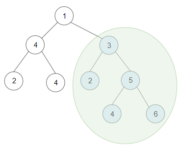
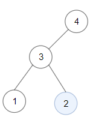

1373. 二叉搜索子树的最大键值和
后序一趟：每棵子树上报「是否 BST、min、max、和」，合法就顺手刷新答案。
思路
- 自底向上：叶子天然是 BST；父结点要求两边都合法，且
左子树 max < 我 < 右子树 min（严格）。 - 非法子树向上传
[0,0,0,0]：某段一旦破功，它所有祖先整支作废，不必再算和。 - 合法子树和 =
val + 左和 + 右和，算出就刷新全局best；空子树贡献 0，所以答案下限是 0（全负树输出 0）。
图解
最优解
1class Solution {2 private long best = 0; // 空树也是合法 BST（和为 0），答案下限是 03 4 public int maxSumBST(TreeNode root) {5 best = 0;6 dfs(root);7 return (int) best;8 }9 10 // 返回 long[4]：{是否 BST(1/0)，子树最小值，子树最大值，子树键值和}11 private long[] dfs(TreeNode node) {12 if (node == null) return new long[]{1, Long.MAX_VALUE, Long.MIN_VALUE, 0};13 long[] l = dfs(node.left), r = dfs(node.right);14 // 两边都是 BST，且当前值严格大于左子树最大、小于右子树最小，合并后才是 BST15 if (l[0] == 0 || r[0] == 0 || node.val <= l[2] || node.val >= r[1]) {16 return new long[]{0, 0, 0, 0}; // 非法子树：其他字段没有意义17 }18 long sum = node.val + l[3] + r[3];19 if (sum > best) best = sum; // 合法就顺手更新全局答案20 return new long[]{1, Math.min(l[1], node.val), Math.max(r[2], node.val), sum};21 }22}题目
给你一棵以 root 为根的 二叉树 ，请你返回 任意 二叉搜索子树的最大键值和。
二叉搜索树的定义如下：
- 任意节点的左子树中的键值都 小于 此节点的键值。
- 任意节点的右子树中的键值都 大于 此节点的键值。
- 任意节点的左子树和右子树都是二叉搜索树。
示例 1：

输入：root = [1,4,3,2,4,2,5,null,null,null,null,null,null,4,6] 输出：20 解释：键值为 3 的子树是和最大的二叉搜索树。
示例 2：

输入：root = [4,3,null,1,2] 输出：2 解释：键值为 2 的单节点子树是和最大的二叉搜索树。
示例 3：
输入：root = [-4,-2,-5] 输出：0 解释：所有节点键值都为负数，和最大的二叉搜索树为空。
示例 4：
输入：root = [2,1,3] 输出：6
示例 5：
输入：root = [5,4,8,3,null,6,3] 输出：7
提示：
- 每棵树有
1到40000个节点。 - 每个节点的键值在
[-4 * 10^4 , 4 * 10^4]之间。
题面取自力扣当前版本。
数据快照 2026-11-04。题面版权归力扣所有，本站点仅供本人学习使用，请勿对外发布。